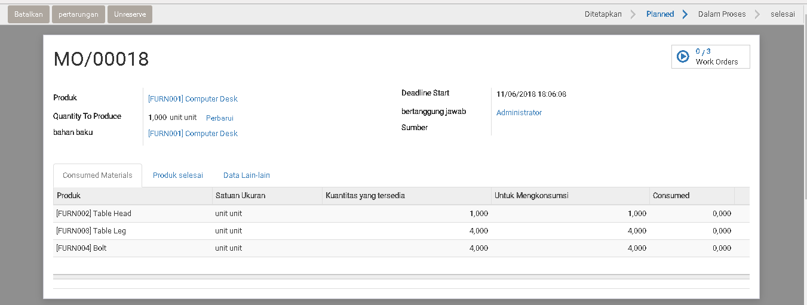

Pesanan Manufaktur
Pesananan Manufaktur bisa kita buat manual atau bisa dapat di buat oleh system dengan cara Make To Order.
Dengan "Pesanan Manufaktur" kita bisa monitor 2 proses:
- Mengadakan pengambilan/picking raw material
- Memindahkan Produk Jadi ke gudang
1. Membuat Pesanan Manufaktur (Manual)

| Field | Required | Description | Default |
|---|---|---|---|
| Produk | Yes | ||
| Quantity To Produce | Yes | Jumlah yang kita perlukan | |
| Bahan Baku | Yes | BoM yang kita akan pakai | |
| Deadline Start | Yes | Tanggal yang harus kita sediakan produk jadi | |
| Bertanggung Jawab | No | User yang tanggung jawab | |
| Sumber | No | Nomor document untuk perintah pesanan ini |
Setelah data yang di data di isikan dengan benar:

Klik > Create Workorders
Consume Materials dan Produk Selesai akan di isikan automatik oleh system.
2. Check Kecukupan Bahan Baku
a. Kondisi Bahan Baku Tidak Mencukupi

User bisa klik "Check Availibity" untuk mengechek apakah bahan baku cukup di proses produksi ini.
Note:
Bila Bahan baku tidak memenuhi kebutuhan. System akan stop di sana dan user
tidak bisa melakukan proses next.
User perlu melakukan persediaan inventory untuk memenuhi kebutuhan.
b. Kondisi Bahan Baku Mencukupi

Bila bahan baku itu mencukupi, di Consume Materials > Kuantitas yang tersedia
akan di isikan oleh system.
3. Pegambilan/Picking Bahan Baku
Print Manufacture Order (MO)/Pesanan Produksi sebagai perintah Produksi dan juga instruksi picking:

Contoh Laporan Produksi dan juga Instruksi Picking

4. Proses Produksi

Klik > Produce
System akan meng-update status MO ini menjadi Proses

Setelah proses, system akan mengadakan pemotongan stock bahan baku dan penambahan barang jadi di inventory.
User bisa lihat gerakan inventory dengan klik button seperti gambah di bawah ini:

5. Pengecheckan Terakhir
Di step ini kita bisa lakukan check terakhir:
- Apakah ada
Wasteyang harus kita laporan/rekor? - Bila tidak ada masalah, kita bisa Complete MO ini
1. Rekor Waste

Klik > Pertarungan
System akan pop up form, user bisa isikan bahan baku yang di rekor sebagai waste
2. Produksi Selesai
Klik > Mark as Done
Untuk menyelesaikan MO ini.